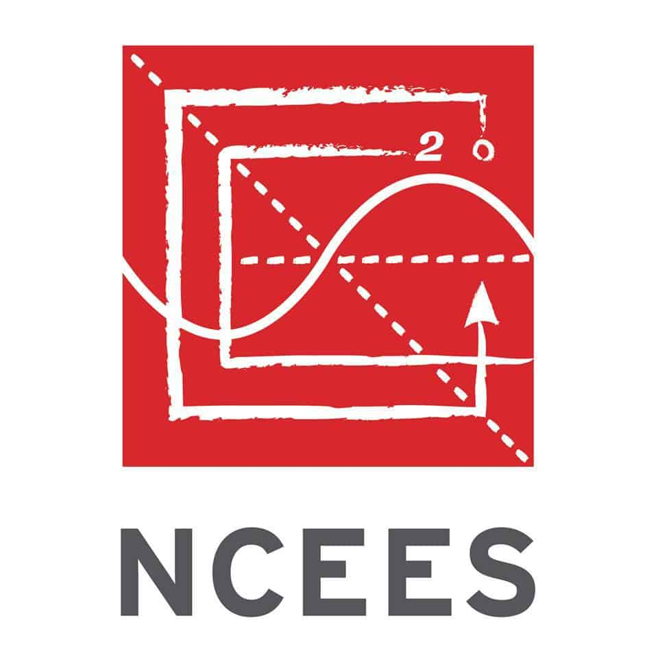
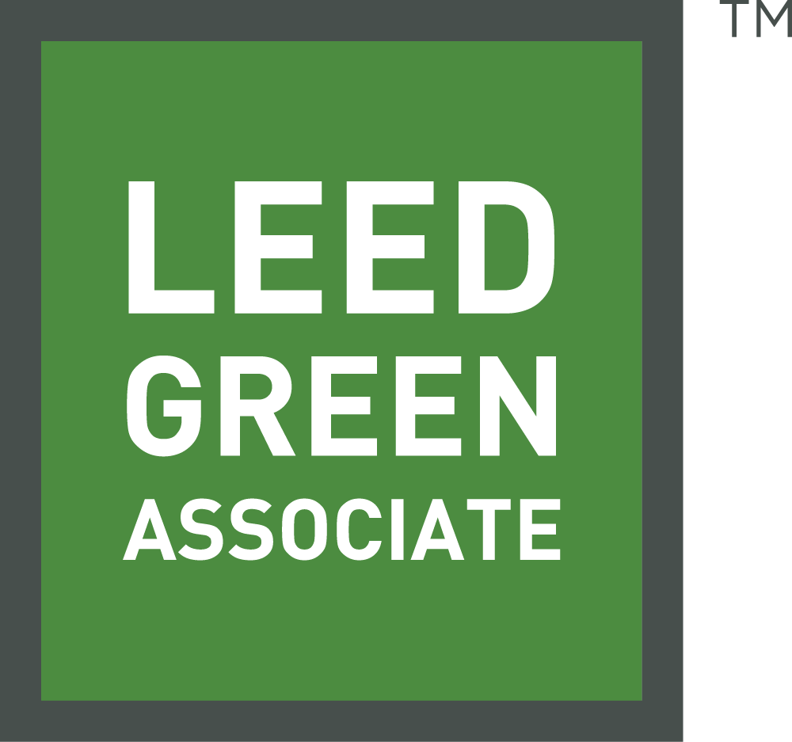
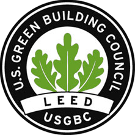
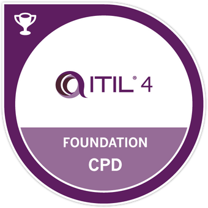
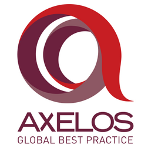
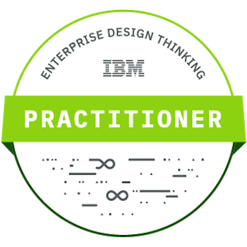
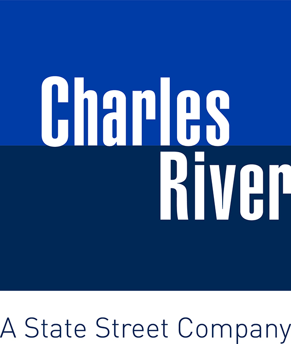
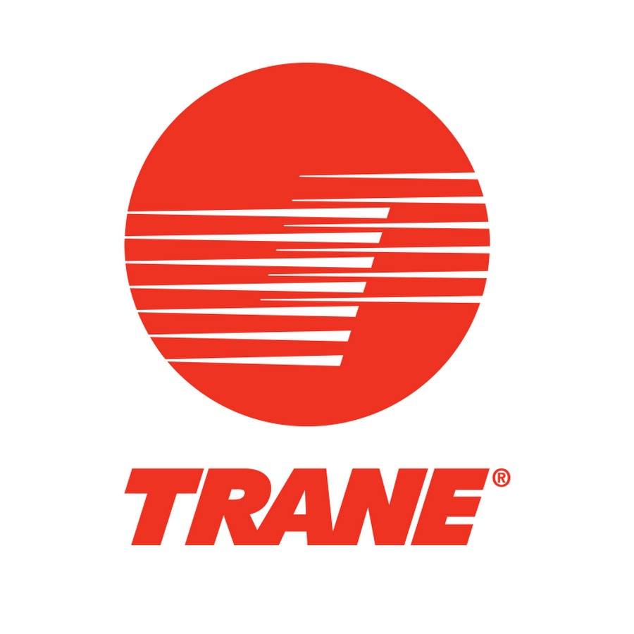

Licenses and Certifications
I am continuously pursuing technical certifications to stay current with the trends of technology.
Some of my credentials are listed below:

Engineer In Training
NCEES
Apr 2016
• Proven an understanding of fundamental engineering principles
See credential (ET31600066)
 
LEED Green Associate
Green Business Certification, Inc.
Apr 2019
• Demonstrated green building expertise
See credential
 
ITIL 4 Foundation
AXELOS
Feb 2020
• Established understanding in IT Service Management
See credential (GR671120083NG)


Enterprise Design Thinking Practitioner
IBM
Apr 2021
• Acquired knowledge of applying Enterprise Design Thinking and proven ability to seek new opportunities
See credential

Product Management: Building a Product Roadmap
Mar 2021
• Learned to build a Product Roadmap that supports your business objectives and product strategy
More information
IoT Foundations: Fundamentals
Jan 2020
• Learned how Internet of Things (IoT) works from a technical standpoint and to design an IoT product - from the hardware-defined product to the digital twin of the physical product - explaining how sensors and embedded systems help to gather data
More information

Charles River Investment Management Solution
Charles River Development
Jul 2016
• Developed an expertise in Charles River's IMS
More information

Trane Air Conditioning Clinic
Ingersoll Rand
Feb 2018
• Gained an understanding of HVAC and refrigeration theory and application
More information
Notary Public
State of New Jersey
Apr 2019
See commission (50102941)